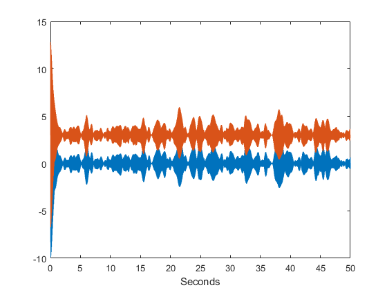
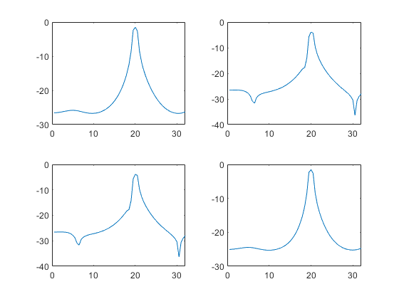
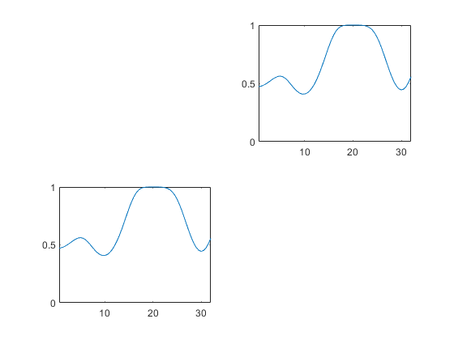
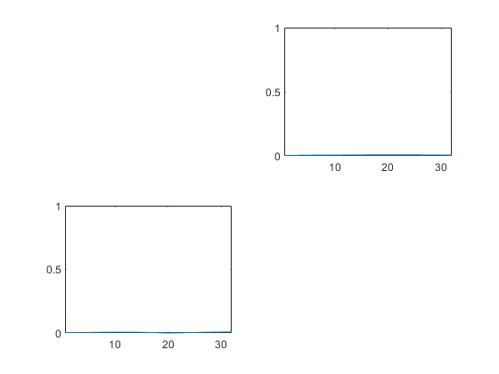

% This simulation is similar to Cassidy and Brown. Spectral Phase % J Neurosci Methods. 2003 Aug 1-15;37(3):299. close all % This demo simulates complex signals with many sinusoidal components and % estimates their spectral properties using MAR models in the setting of % multidirectional coupling % Noise SD noise_dev=0.01; Nsines=100; % Sinusoidal components f=sqrt(0.2)*randn(Nsines,1)+20; % Frequencies secs=50; % Signal duration ns=100; % Sampling frequency t=[1/ns:1/ns:secs]'; % Time vector N=length(t); % Sample number % Initialise signal y=zeros(N,1); % Sum sinusoids with random frequencies for n=1:Nsines, y=y+sin(2*pi*f(n)*t); end y=y/std(y); % Normalise to unit variance % Delay delay=50; % Milliseconds delay_in_samples=ns*delay/1000; % Convert delay to number of samples % Create two signals y1=y+noise_dev*randn(N,1); y2=[y1(delay_in_samples:end);zeros(delay_in_samples-1,1)]; % y2 is delayed version of y1 y2=y2+noise_dev*randn(N,1); % Add noise % Bivariate data matrix y=[y1,y2]; % Plot both signals h=figure; set(h,'name','Data'); plot(t,y1); hold on plot(t,y2+3); % Shift y2 so no overlap xlabel('Seconds'); % Fit MAR model p=10; % Order freqs=[0.5:0.5:32]; % Frequencies mar = spm_mar(y,p); mar = spm_mar_spectra (mar,freqs,ns,1); % Calculate spectral estimates   